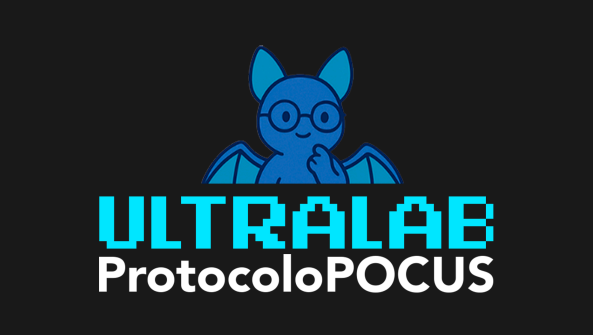
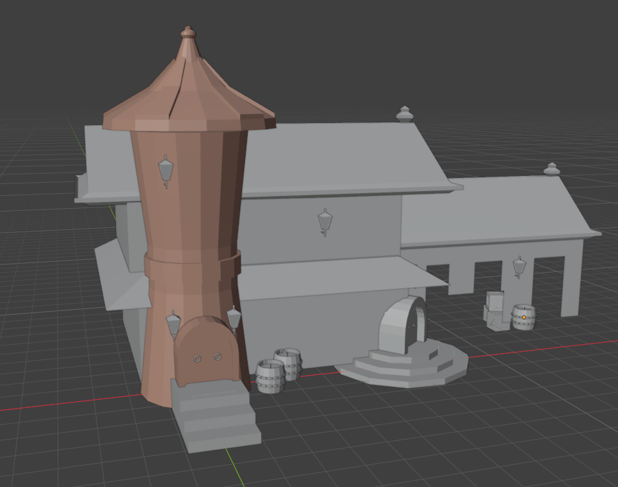
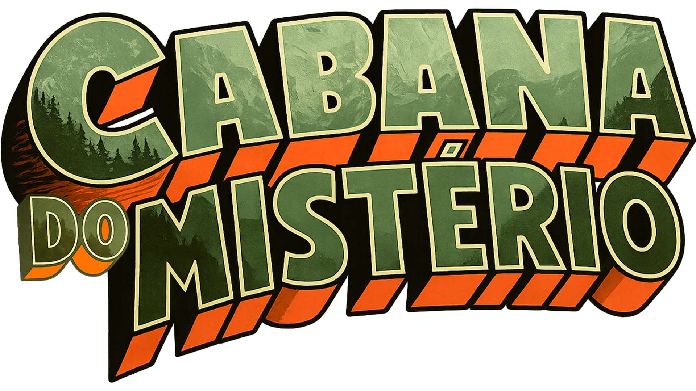
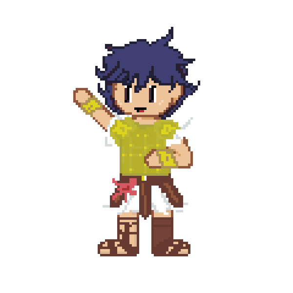
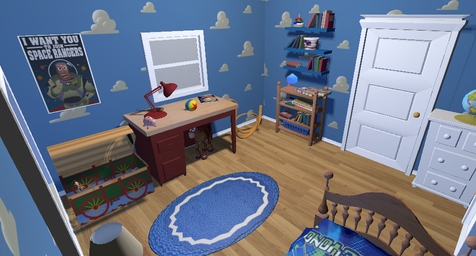
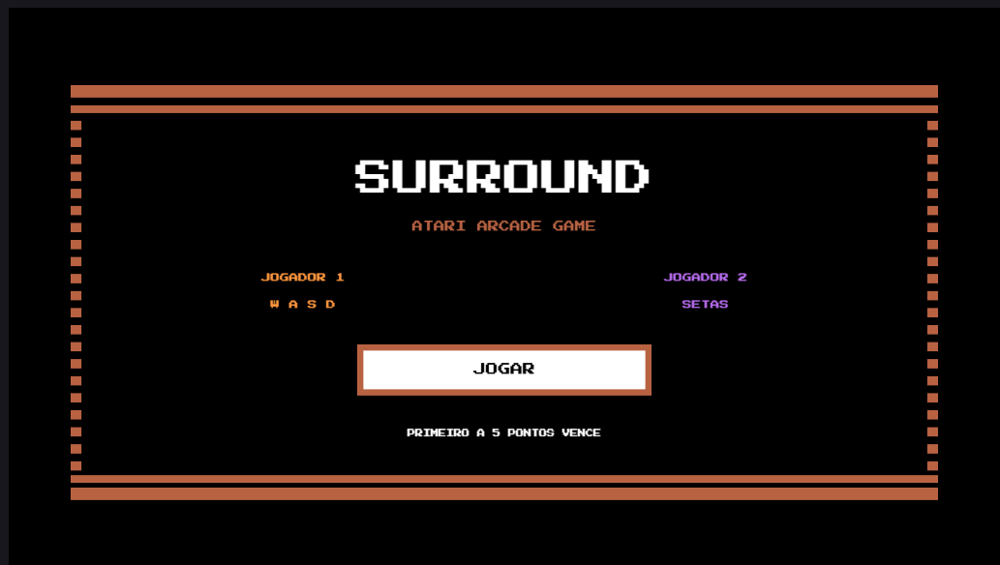

Sou Guilherme Pacheco e busco me especializar em desenvolvimento de sistemas e soluções web, evoluindo constantemente na área. Sou apaixonado por jogos, que me inspiram a criar e inovar em meus projetos. Em alguns momentos, reduzo o escopo das ideias para garantir entregas no prazo. Isso pode limitar propostas mais amplas, mas assegura maior objetividade. Essa postura reforça meu compromisso com resultados e o trabalho em equipe.
Unity 2D e 3D
C# / C++ / C / JavaScript
HTML5 / CSS3 (ES6+)
Modelagem 3D, Recursos Visuais, Pixel Art
Design de Som e Produção de Efeitos
Pacote Office Avançado e Planilhas






Atendimento ao público, organização de documentos, planilhas, arquivos e controle de materiais administrativos.
Desenvolvimento de comunicação interpessoal, criatividade, oratória e trabalho em equipe.
Destaque nacional em raciocínio lógico e resolução de problemas matemáticos.
Conhecimento e utilização da Inteligência Artificial Gemini para produtividade e aprendizado, aliado ao estudo sobre o mercado de trabalho.
Proficiência nativa completa.
Nível básico voltado para compreensão de termos técnicos e documentações de código.